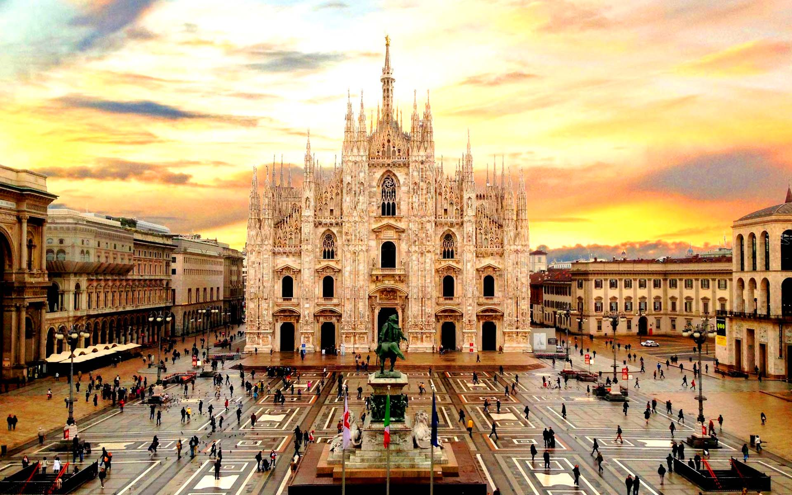

밀라노는 이탈리아의 경제적 수도라 할 정도로 이탈리아 최대의 경제 중심지이다.
또한 밀라노는 세계 패션과 디자인의 중심지이기도 하며 유명 패션 및 명품 브랜드의 본사와 패션/디자인 박람회가 집중되어있다.
매년 열리는 밀라노 패션 위크는 세계 4대 패션 위크에 들 정도로 규모가 크다.
이탈리아의 중앙 주식 시장, 주요 은행의 본점, 여러 대기업의 본사가 집중되어 있으며, 시 외곽에서 시작되어 북쪽 알프스 산맥을 따라 기계, 섬유, 의약, 자동차 등 분야의 수많은 공장이 분포하여, 유럽에서는 독일 다음으로 큰 제조업 산업 단지를 구성하고 있어 이탈리아 제조산업의 근간을
이루고 있다. 경제의 중심지이기도 하지만, 매우 유서 깊은 도시로 많은 문화재와 문화 시설이 있어 관광의 중심지이기도 하다. 밀라노 대성당, 라스칼라 극장이 특히 유명하며, 많은 박물관과 미술관이 있다. 1906년 세계 박람회를 이 도시에서 개최했으며 2015년 등록박람회를 개최하였다.녹지
비율은 매우 적은 편이지만 공원이 잘 갖춰져 있다. 유명한 셈피오네 공원, 가장 큰 공원인 파르코 포르라니니, 가장 오래된 공원인 지아르디니 퍼블리치 등이 밀라노의 주요 공원이다.